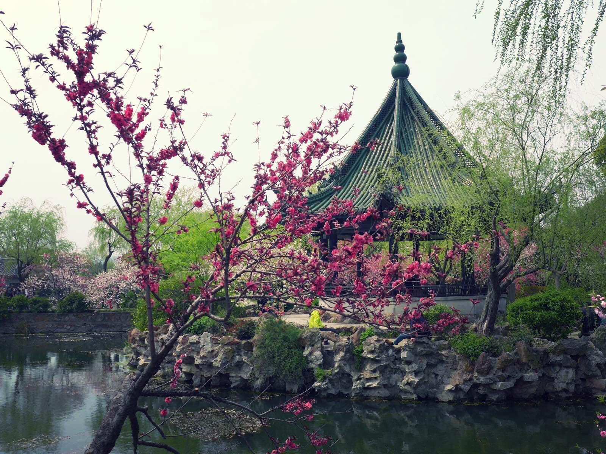
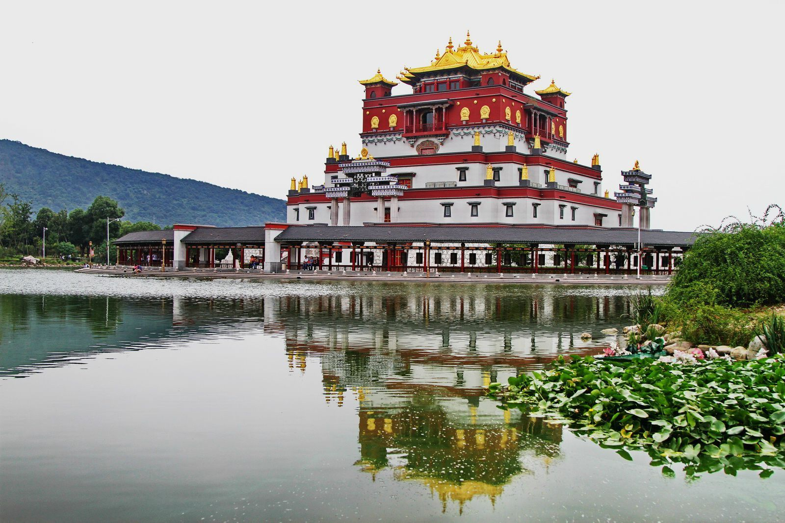
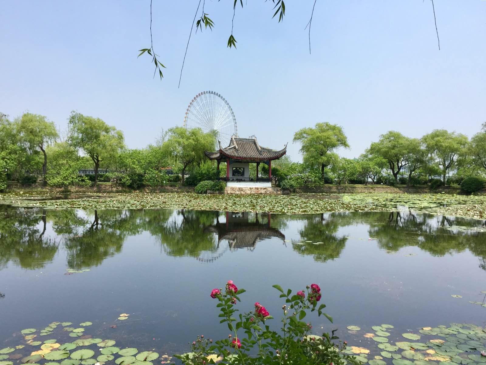
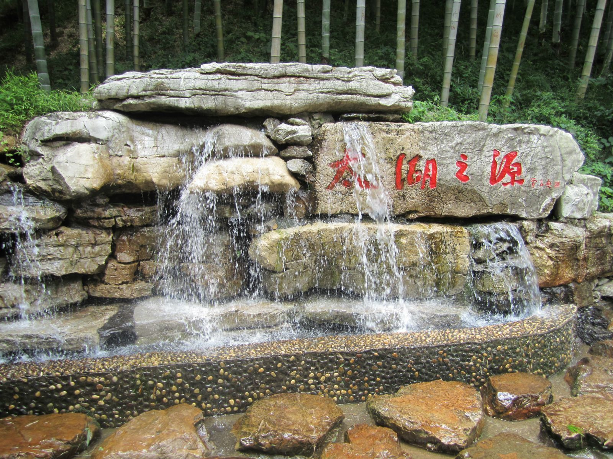

无锡美景




无锡概况
无锡，简称“锡”，古称梁溪、金匮，被誉为“太湖明珠”。
无锡市位于长江三角洲平原腹地，江苏南部，太湖流域的交通中枢，京杭大运河从中穿过。
无锡北倚长江，南濒太湖，东接苏州，西连常州，构成苏锡常都市圈，是江苏长江经济带重要组成部分。
无锡自古就是鱼米之乡，素有布码头、钱码头、窑码头、丝都、米市之称，是中国国家历史文化名城。
无锡是中国民族工业和乡镇工业的摇篮，是苏南模式的发祥地。无锡文化属吴越文化，无锡人属江浙民系使用吴语。
无锡有鼋头渚、灵山大佛、无锡中视影视基地（三国城、水浒城、唐城）、梅园、蠡园、惠山古镇、
荡口古镇、东林书院、崇安寺、南禅寺等景点，是中国优秀旅游城市。“太湖佳绝处，毕竟在鼋头”是诗人郭沫若用来形容无锡太湖的风景的。
大家印象
江南烟雨、太湖碧波，孕育了无锡的过往和现在。糯软的锡剧唱腔，
和着灵山的佛音，佐以二泉映月的曲调，再配上无锡排骨等各色小吃，时间就可以在此停住了。
走进无锡
无锡位于江苏省南部，长江三角洲平原腹地，太湖流域的交通中枢，北倚长江，南濒太湖，东接苏州，西连常州，京杭大运河从中穿过；
运河绝版地、江南水弄堂就位于无锡。
无锡自古就是我国著名的鱼米之乡、中国四大米市之一
无锡同时也是一座繁华的现代化城市，我国民族工业的发源地之一，素有布码头、钱码头、小上海之称。
无锡地处太湖之滨，风景绝美秀丽，历史千年悠长，是在江南蒙蒙烟雨中孕育出的一颗璀璨的太湖明珠，具有丰富而优越的自然风光和厚重而悠长的历史文化。
最佳季节：3-4月、10-11月。无锡的秋季天高气爽,气温适宜,不但能品尝到太湖的新鲜肥美的水产,还能吃到无锡水蜜桃中的佳品,
因此,这个时候到无锡,无疑是最佳的选择。 喜欢花的游客,春季到无锡也是不错的选择。
虽然天气多变,但这时候正是无锡梅花、杜鹃花、樱花、桃花、玉兰花相继开放的季节,处处花团锦簇,无不体现着春的气息。
而且无锡当地从初春开始,便会有各种庙会举行,热闹非凡。同时,这些庙会是不容错过的了解无锡文化与民俗的好机会。
建议游玩：2-4天
三日游
DAY1 无锡梅园 -无锡樱花谷 -鼋头渚 -水浒城 -三国城
DAY2 蠡园 -蠡湖公园 -太湖之星
DAY3 无锡博物院 -南长街 -无锡南禅寺 -薛福成故居 -崇安寺步行街
四日游
DAY1 无锡梅园 -无锡樱花谷 -鼋头渚 -水浒城 -三国城
DAY2 蠡园 -蠡湖公园 -太湖之星
DAY3 无锡博物院 -南长街 -无锡南禅寺 -薛福成故居 -崇安寺步行街
DAY4 锡惠公园 -龙光塔 -天下第二泉 -寄畅园
七日游
DAY1 无锡南禅寺
DAY2 锡惠公园 -寄畅园 -二泉书院 -惠山寺金莲桥 -华孝子祠 -天下第二泉
DAY3 灵山 -灵山梵宫
DAY4 三国城 -水浒城 -蠡园
DAY5 鼋头渚
DAY6 无锡博物院 -崇安寺步行街
DAY7 薛福成故居 -东林书院 -无锡动物园太湖欢乐园 -无锡梅园